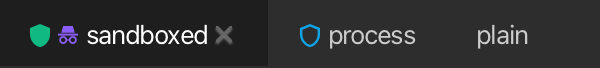

Sitzungs-Isolation¶
korTTY kann eine Terminal-Sitzung getrennt von korTTY selbst und von den anderen Tabs ausführen. Wie weit, wählen Sie pro Verbindung, pro Ordner des Connection-Managers oder für alles unter Konfiguration → Globale Einstellungen → Sicherheit, und der Tab zeigt, was die Sitzung tatsächlich bekommen hat.
Isolationsstufen¶
| Stufe | Wirkung |
|---|---|
| Keine | Die Sitzung läuft wie zuvor. |
| Eigener Prozess | Die Sitzung läuft in einem eigenen Prozess. |
| Eigener Prozess + Sandbox | Der Prozess läuft zusätzlich in der Sandbox des Betriebssystems: Er kann das Konfigurationsverzeichnis ~/.kortty von korTTY (Verbindungen, Anmeldedaten, master.key, Logs, Journale), ~/.ssh, ~/.gnupg und die Schlüsselbunde weder lesen noch schreiben, und er darf nur in seinen Arbeitsordner, den temporären Ordner und einen eigenen Ordner schreiben, der beim Ende der Sitzung gelöscht wird. |
Was jede Verbindungsart in dieser Version bekommen kann:
| Verbindungsart | Keine | Eigener Prozess | Eigener Prozess + Sandbox |
|---|---|---|---|
| Lokale Shell | ja | ja (eine lokale Shell ist immer ein eigener Prozess) | ja |
Mosh (nativer mosh-client) |
ja | ja | ja: mosh-client läuft in der Sandbox; der kurze SSH-Start von mosh-server bleibt in korTTY |
| SSH | ja | ja, in einem Session-Worker (siehe unten) | ja |
| Mosh (eingebauter Client) | ja | ja, in einem Session-Worker | ja |
Eine isolierte Sitzung des eingebauten Mosh-Clients läuft ebenfalls in einem Session-Worker: Der SSH-Login, der mosh-server startet, und die Mosh-Sitzung selbst (UDP, ihre Verschlüsselung und die Bildschirm-Aktualisierungen) laufen in eigenen Worker-Prozessen, und in der Sandbox darf der Mosh-Worker nur an den UDP-Port senden, den mosh-server gemeldet hat (unter Linux nur an diesen Port dieses Servers). Nur wenn diese Installation keine Session-Worker starten kann, läuft eine Verbindung mit dem eingebauten Mosh-Client, die Isolation verlangt, stattdessen mit dem nativen mosh-client, falls er installiert ist. Eine Verbindung, die mehr verlangt, als ihre Verbindungsart bekommen kann, läuft mit der stärksten Stufe, die möglich ist, und der Verbindungseditor sagt das unter Isolation:. Verlangt Ihre Organisation eine Stufe, die die Verbindungsart nicht bekommen kann, wird die Sitzung gar nicht erst geöffnet.
SSH-Sitzungen in einem Session-Worker¶
Eine isolierte SSH-Sitzung läuft in einem Session-Worker, einem kleinen eigenen Prozess, den korTTY für genau diese Verbindung startet. Der Worker verbindet sich mit dem Server (über den Jump-Server, falls es einen gibt), authentifiziert sich und hält die verschlüsselte Verbindung; korTTY spricht mit ihm über eine Verbindung auf diesem Computer (127.0.0.1), die nur ein einmaliges Token annimmt, das korTTY dafür erzeugt hat, und deren Schlüssel korTTY festhält. Der Worker reicht jeden Kanal, den korTTY öffnet, an den Server weiter, sodass das Terminal, SFTP auf der Sitzung des Terminals, abgelegte Dateien, die Befehle des KI-Agenten sowie -L-, -D- und -R-Tunnel wie bei einer direkten Sitzung funktionieren.
- Ihr privater Schlüssel bleibt in korTTY. Der Worker bekommt nie einen Schlüssel: Wenn der Server eine Signatur verlangt, fragt der Worker korTTY, das mit dem wie gewohnt geladenen Schlüssel signiert. Der Worker bekommt das Passwort eines Passwort-Logins und das des Jump-Servers, aber nie den Tresor oder das Master-Passwort.
- Host-Keys und Abfragen wie bisher. korTTY prüft den Host-Key des Servers mit den gewohnten Dialogen gegen seine bekannten Hosts und beantwortet Keyboard-Interactive-Abfragen, auch den Zugriffsgrund, mit den gewohnten Dialogen.
- Mit einer Sandbox kann der Worker
~/.kortty,~/.ssh,~/.gnupgund die Schlüsselbunde weder lesen noch schreiben und schreibt nur in einen eigenen Ordner. Auf macOS darf er sich außerdem nur mit diesem Computer und mit dem Port des Servers und des Jump-Servers verbinden. Auf Linux hat er gar kein eigenes Netzwerk: korTTY stellt seine Verbindungen für ihn her, und zwar nur zu Host und Port des Servers und des Jump-Servers; ein Mosh-Worker erreicht ebenso nur den UDP-Port seiner Sitzung. - Remote-Tunnel (
-R) kommen zu korTTY zurück. Der Worker fordert den weitergeleiteten Port beim Server an; verbindet sich etwas damit, kommt die Verbindung des Servers über den Worker zu korTTY zurück, das das lokale Ziel des Tunnels selbst verbindet, mit der gewohnten Bestätigung und Policy. Der Worker braucht dafür kein eigenes Netzwerk, sodass seine Sandbox so eng bleibt wie oben beschrieben. - Stürzt der Worker ab, meldet der Tab Sitzungsprozess abgestürzt (Exit N) mit der letzten Meldung des Workers und bietet an, neu zu verbinden; das Log von korTTY enthält seine letzte Ausgabe. Eine im Netzwerk verlorene Verbindung wird wie bei einer direkten Sitzung als Connection lost gemeldet.
Werkzeuge → Sitzungsprozesse... listet jede Sitzung, die in einem Worker läuft: Verbindung, Prozess-ID, Isolation, Speicher, CPU-Anteil und Laufzeit, alle zwei Sekunden aktualisiert. Eine Zeile wird markiert, solange ihr Worker einen CPU-Kern auslastet, und Prozess beenden beendet den ausgewählten Worker; sein Tab bietet dann an, neu zu verbinden. Worker laufen mit niedrigerer Priorität, sodass ein ausgelasteter Worker das Fenster von korTTY nicht bremst.
Die Sandbox auf jedem Betriebssystem
Auf macOS verwendet korTTY sandbox-exec mit einem Profil, das es für jede Sitzung erzeugt. Auf Linux verwendet es bubblewrap (bwrap), das installiert sein muss; es braucht unprivilegierte User-Namespaces, die manche Container nicht erlauben. Auf Windows und wenn korTTY in Flatpak läuft (selbst eine Sandbox, die keine weitere darin erlaubt), gibt es noch keine Sandbox. Vor der ersten Sitzung in der Sandbox führt korTTY einen Selbsttest aus: Eine geheime Datei in seinem Konfigurationsordner muss aus der Sandbox heraus unlesbar sein, während ein harmloser Befehl weiterhin läuft. Nur eine Sandbox, die den Test besteht, gilt als verfügbar.
In einer lokalen Shell in der Sandbox zeigen die History-Datei (HISTFILE) und TMPDIR auf den eigenen Ordner der Sitzung, sodass die History der Shell die Sitzung nicht überdauert, und die Variable KORTTY_SANDBOX nennt die verwendete Sandbox.
Eine Stufe wählen¶
- Für eine Verbindung: Connection-Manager → Verbindung bearbeiten → Tab Terminal-Einstellungen → Sitzungs-Isolation (unter Terminal-Verhalten) → Isolation:. Standard verwenden folgt dem Ordner der Verbindung oder den Einstellungen und nennt, was davon gilt.
- Für einen Ordner: Rechtsklick auf den Ordner im Connection-Manager → Sitzungs-Isolation → Standard verwenden, Keine, Eigener Prozess oder Eigener Prozess + Sandbox. Ordner darunter erben die Stufe, ebenso die Verbindungen darin, die keine eigene festlegen. Die Stufe zieht mit, wenn der Ordner umbenannt wird, und wird entfernt, wenn der Ordner gelöscht wird.
- Für einen Tab aus einem Skript:
kortty-cli tab create --connection <Name> --isolation sandboxöffnet die Verbindung mit dieser Stufe statt ihrer eigenen, nur für diesen Tab (siehe Steuerungs-CLI). - Für alles andere: Konfiguration → Globale Einstellungen → Sicherheit → Sitzungs-Isolation → Standard-Isolation:. Der Abschnitt zeigt auch, ob dieser Computer eine funktionierende Sandbox hat.
Eine Verbindung aus einer geteilten Teamwork-Datei kann die Isolation nur strenger machen als Ihr Ordner oder die Einstellungen, nie lockerer.
Ein Session-Journal vermerkt bei jedem Verbindungsaufbau die Isolation der Sitzung (zum Beispiel isolation: sandboxed (sandbox-exec)), und pane.list und pane.get der Control-API melden für jeden Bereich isolation (none, process, sandboxed oder degraded) und ob sein Tab incognito ist.
Was der Tab anzeigt¶

| Tab-Symbol | Bedeutung |
|---|---|
| kein Schild | Die Sitzung ist nicht isoliert. |
| Schild-Umriss (blau) | Eigener Prozess. |
| Gefülltes Schild (grün) | Eigener Prozess innerhalb einer verifizierten Sandbox; der Tooltip nennt die Sandbox (sandbox-exec oder bubblewrap). |
| Schild mit Ausrufezeichen (bernsteinfarben) | Eine Sandbox wurde angefordert, ist aber nicht aktiv, zum Beispiel weil bwrap fehlt; die Sitzung läuft im eigenen Prozess, und der Tooltip sagt, warum. |
| Spion (violett) | Eine Inkognito-Sitzung (siehe unten). |
Bei geteilten Bereichen zeigt das Schild den am wenigsten isolierten Bereich, nur eine fehlende Sandbox zeigt immer das Warnzeichen; der Tooltip des Tabs zählt dann, wie viele Bereiche in einer Sandbox laufen, im eigenen Prozess, ohne die angeforderte Sandbox und ohne Isolation. Screenreader lesen dieselben Texte.
Strenger Terminal-Modus¶
Strenger Terminal-Modus: im selben Abschnitt verwirft Escape-Sequenzen, die ein feindlicher Server missbrauchen könnte, bevor das Terminal sie sieht: Zugriff auf die Zwischenablage (OSC 52), Links, die keine http- oder https-Links sind (OSC 8), Fenstertitel über 256 Zeichen oder mit Steuerzeichen, jede OSC-Sequenz über 4 KiB sowie Gerätesteuerungs-Sequenzen (DCS), Application Program Commands, Privacy Messages und Start-of-String-Sequenzen. Alles andere, auch Farben, Markierungen der Shell-Integration und das Arbeitsverzeichnis, das eine Shell meldet, bleibt unverändert. Automatisch (an in einer Sandbox) ist die Vorgabe; An und Aus legen es für die Verbindung fest. Eine Teamwork-Verbindung kann ihn einschalten, aber nicht ausschalten.
Inkognito-Sitzungen¶
Eine Inkognito-Sitzung hinterlässt keine Spur in korTTY: kein Terminal-Log, kein Session-Journal, keine Aufzeichnung, keinen Eintrag unter Datei → Zuletzt geschlossen, nichts von ihrem Bildschirm in einem gespeicherten Projekt und keinen Platz in der Sitzung, die korTTY nach einem Neustart wiederherstellt. Ihr Tab zeigt einen Spion. Inkognito funktioniert mit jeder Isolationsstufe, mit oder ohne Sandbox.
- Jede Sitzung einer Verbindung: Haken Sie Inkognito-Sitzung im Abschnitt Sitzungs-Isolation des Verbindungseditors an. Eine Verbindung aus einer geteilten Teamwork-Datei kann nicht inkognito gemacht werden.
- Eine Sitzung: Datei → Neue Inkognito-Sitzung… öffnet die Schnellverbindung; der Tab, den sie öffnet, ist inkognito, egal was die Verbindung festlegt.
Was Inkognito nicht abdeckt
Inkognito betrifft, was korTTY aufzeichnet. Der Server, die eigene Historie einer Remote-Shell und alles, was ein Programm in der Sitzung schreibt, sind davon nicht betroffen. Wenn Ihre Organisation ein Sitzungsjournal für jede Sitzung erzwingt, wird auch eine Inkognito-Sitzung journalisiert, und eine Organisation kann Inkognito-Sitzungen ganz untersagen.
Organisationsrichtlinie¶
Eine Unternehmensrichtlinie kann mit [rule.isolation] minimum eine Mindest-Isolation verlangen und mit incognito-sessions = "deny" in [rule.features] Inkognito-Sitzungen verbieten; siehe Unternehmensrichtlinie. Die Stufen unter dem Minimum sind dann überall ausgegraut, und eine Sitzung, die das Minimum nicht bekommen kann, wird mit einer Meldung abgelehnt, statt mit weniger geöffnet zu werden.